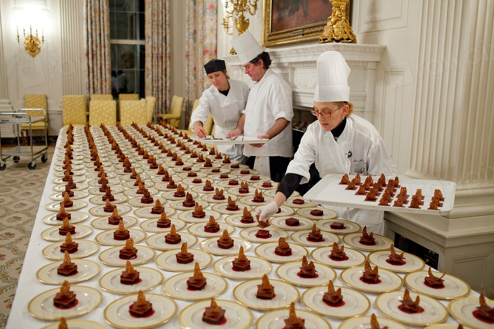

Our story
- Founded
- 2019, Saigon
- Salon
- 32 seats
NOIR PATISSERIE began in 2019 as a six-seat counter on Ly Tu Trong Street, with one oven, one marble slab and a stubborn idea: that French pastry could be made in Saigon without shortcuts, and without pretending to be somewhere else.
Our head pastry chef, Camille Arnaud, trained in Lyon and spent a decade in hotel kitchens before settling here. The recipes are classical. The fruit, the cacao and the coffee are increasingly local, chosen bean by bean and orchard by orchard.
“We would rather sell out by four o’clock than make one more cake than we can make well.”
Today the salon seats thirty-two. The kitchen behind it is still small, and we like it that way: every pastry passes through the same few pairs of hands before it reaches the glass.
